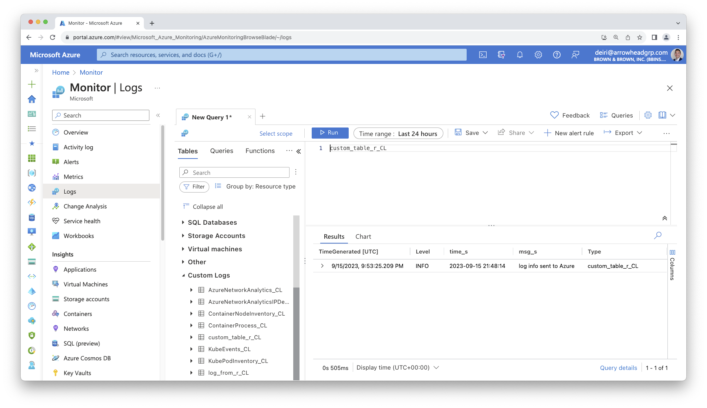

AZ_LOG_ID="00000000-0000-0000-0000-000000000000"
AZ_LOG_KEY="5LLi6guNfYDFDSFDvx8ZeOAHlz7dX0hI9S5RTI6ISnGwa3aTvq/Mzg2SlwaaRqkZAAaSiYStlpx48y8zQ=="
# The above Key is not real, but is representative of what it should look likeUsing The azlogr Package To Send Logs via API
In the previous section we configured our code to log to a syslog_appender using the log4r package. There are some limitations in that it requires a certain type of infrastructure (Linux VM, capability to write to your systems syslog).
If you run into any IT restrictions, it can be easier to instead make an API call.
The package azlogr is a great option for sending your logs to your Azure Log Analytics Workspace. It is built on top of the logger package, so the examples below are not related to the log4r package. The concepts, however, are generally very similar.
Requirements: Getting Azure Log Analytics Information
To send logs to Azure Log Analytics via API, you need some information to identify where to send the logs, and for authentication.
- Azure Log Analytics Customer/Workspace ID
- View Microsoft Documentation to find this Workspace ID
- Azure Log Analytics Shared Key
- See this Microsoft thread for finding your shared Key.
Set Up
Because you are using sensitive information, you should set up an .Renviron file to store your Workspace ID and Shared Key values. Read about using environment variables or storing secret values with the Posit Solutions Guide
Here’s an example .Renviron file:
Be sure to also review azlogr’s vignette on How to Use azlogr
Using azlogr to send logs via API
# Azure Log Analytics workspace id and shared key are fetched from Azure Portal
AZ_LOG_ID = Sys.getenv("AZ_LOG_ID")
AZ_LOG_KEY = Sys.getenv("AZ_LOG_KEY")
library(azlogr)
set_log_config(
log_fields = c("level", "time", "msg"),
log_type = "custom_table_r"
)
# Use logger_* functions with appropriate logging level to log.
# If POST is successful, then it will be available in custom log table on
# Azure Log Analytics, by default table name will be `log_from_r4`_CL (_CL is
# added by Azure for any custom log table)
logger_info("log info sent to Azure")You can then view the results in Azure Monitor Logs. Note that it does take a few minutes for the log data to appear, so it is not instantaneous. See the time difference between time_s and TimeGenerated.
